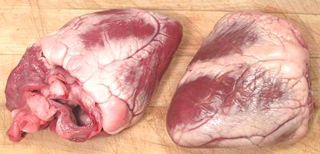

Lamb Hearts

Lamb hearts are eaten by pretty much every culture where lamb is a
significant item in the diet. The meat is dark and tough, so needs long
cooking. The photo specimens were 4-1/4 x 3 x 2
inches and wighed 10-3/4 ounces, a significant part of which is hard
fat. Pig hearts are larger, cheaper and much less fatty, but forbidden
by Islam and Judaism.
More on Lamb Innards.
Lamb hearts, like the hearts of all other animals, are exercised
continuously, so they are tough and need long wet cooking. They are often
cut into small pieces for faster cooking. Medium size pieces will take
about a 4 hour simmer. They are also sometimes stuffed.
Buying:
Lamb hearts will be found in markets serving
Turkish, Armenian, Middle Eastern and North African communities. They
should also be easy to find in New Zealand and Australian meat markets.
Prep:
The first task is to cut away the surrounding fat
and attached plumbing. The fat surrounding the heart is quite stiff,
almost hard, and needs to be cut away carefully with a very sharp knife.
Yield:
As with all other parts of lamb, the hearts come with
plenty of attached fat. By time you've cut away excess fat and plumbing
you have a yield of about 70%.
as_heartz 091011 - www.clovegarden.com
©Andrew Grygus - agryg@clovegarden.com - Photos
on this page not otherwise credited © cg1
- Linking to and non-commercial use of this page permitted